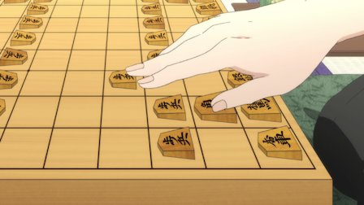
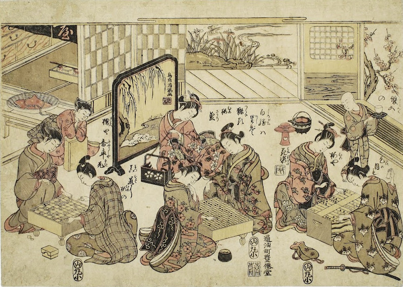

About Shoghi
Shogi is a traditional Japanese strategy board game, similar to Western chess. Current chess players will be happy to know that shogi will improve their game by at least one class.
Shogi comes in numerous variants. In addition to the traditional Japanese characters (1-kanji and 2-kanji sets), there is a version with international symbols.

Shogi is similar to the classic game of chess, but has interesting changes and addition to the rules. The main change is the re-entry of captured pieces (“drop rule”), which makes the game more engaging and makes unexpected turnover possible. Another addition is the promotion of all pieces. The pieces become stronger, and make the game more interesting (Explained further in the rules). New players who have never played chess before can become proficient within two or three games, thanks to our special marking. An experienced chess player can learn even sooner. It is truly a great game for professionals who are looking for a challenge as well as for beginners.

Shogi History
The exact origin of Shogi is unknown, but it most likely evolved from Chinese chess when it was delivered by the imperial ambassador during the rule of Nara (710-794). It became popular with Japanese nobility in the Heian period (794 - 1185) when the Japanese capital moved from Nara to Kyoto.
The origin of the re-entry of captured playing pieces is not known, but it was probably introduced in the 16th century. At that time, captured soldiers had two options, execution or enter a battle for the enemy.
The modern shogi was developed from a version of Sho-shogi (Small shogi). The rules were officially established and precisely formulated at the beginning of the Edo period (1600-1868; Edo is the former name of Tokyo).

(Source: http://www.jade.co.jp)
FAQ
Shogi is similar to the classic game of chess, but even people who dislike chess have found this game to be fun. The main differences between the games are the upgrading of all pieces, and the re-entry of captured pieces. A radical change can happen anytime in the game.
1. Are the rules very complicated?
A beginner can understand the rules in only 5 minutes! :)
2. What if I don’t understand Japanese?
We don’t know Japanese either, that is why we added helpful arrows. Players do not have to learn Japanese, or even know chess to play Shogi.
3. Do Shogi and Chess go together well?
Absolutely! Shogi helps improve chess strategy, especially becoming more aggressive. Shogi is a much more complicated game, while in chess there are 10^123 possible combinations, Shogi has an incredible 10^224 combinations.